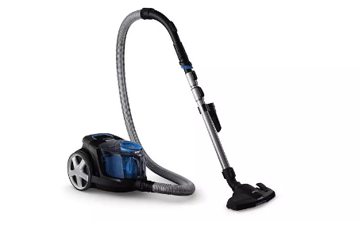
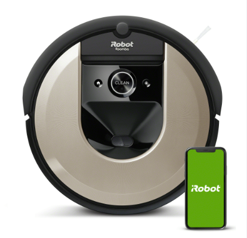
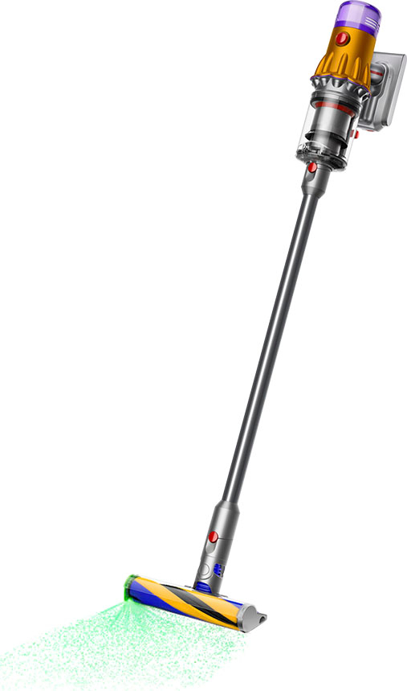

SUCCION TOTAL
¿Quienes somos?

Bienvenidos a Succión Total, la nueva empresa de aspiradoras en Montevideo. Somos un grupo de expertos en tecnología y diseño de aspiradoras, nos dedicamos a proporcionar una limpieza completa en su hogar u oficina, utilizando tecnología de vanguardia y materiales de alta calidad.
Nuestros objetivos
Desde el principio, nuestra prioridad ha sido crear productos de calidad que superen las expectativas de nuestros clientes. Nos esforzamos por ofrecer las mejores soluciones de limpieza a través de la innovación constante y la mejora continua de nuestros productos.
NUESTRAS MEJORES MARCAS Y MODELOS
Philips - PowerPro Compact

La aspiradora sin bolsa Philips PowerPro Compact recoge más polvo y filtra el 99,9% de la suciedad para conseguir suelos limpios y aire fresco. Su acción ciclónica potente y su avanzado diseño eliminan la suciedad para controlar el polvo, incluso mientras se vacía. Su cepillo TriActive aplica 3 acciones de limpieza de una pasada, aspirando alfombras, trozos grandes y el polvo y la suciedad cerca de los muebles y las paredes con sus canales de aire laterales izquierdo y derecho. Tiene un mango ergonómico y ruedas grandes, que facilitan su uso.
iRobot - Roomba i6

Este aspirador Roomba es considerado por muchos como el mejor robot aspirador. Cuando descubre el tipo de limpieza que le solicitas, te aconseja los programas más eficaces. Contiene tres cepillos que se adaptan a todo tipo de superficies y rincones. Sus sensores le permiten desplazarse por tu hogar detectando los cambios de nivel y evitando accidentes. Puedes usar la app de este iRobot para controlarlo. La marca garantiza que funciona correctamente durante años.
Dyson - V12 Detect Slim Extra

La aspiradora sin cable Dyson V12 Detect Slim Extra es la más ligera de la familia. Cuenta con una potencia de succión de 150 W y dispone de 60 minutos de autonomía para acabar con toda la suciedad del hogar. Además viene con diferentes accesorios para hacer una limpieza más fácil, y eficaz. Podrás seguir todo el proceso de succión en su pantalla LCD. ¡Pesa muy poco y se puede guardar en cualquier parte!
Visita nuestro instagram
descuentos
descuentos
contactanos al: 345768936